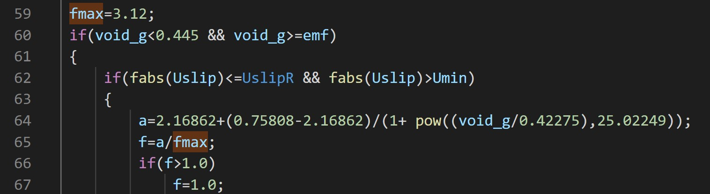

EMMS/matrix 两步法Q&R
EMMS两步法中第一步关联介尺度变量，第二步利用生成的变量关联矩阵内部插值求得非均匀因子。当前Fluent引用内容为lu.2009et.al,
在此基础上扩大其适用范围并在几个典型例子中予以验证。
Fluent求解器引用版本
phase interaction 选项示意
在20R1后的版本中，在phase interaction部分软件封装了EMMS曳力
问题是该关联式适用范围仅限于文章中算例操作条件，即固定的Ug/Gs操作条件。但文中同时指出
也就是说，第一步遍历的Gs和Ug实际上意义不大。